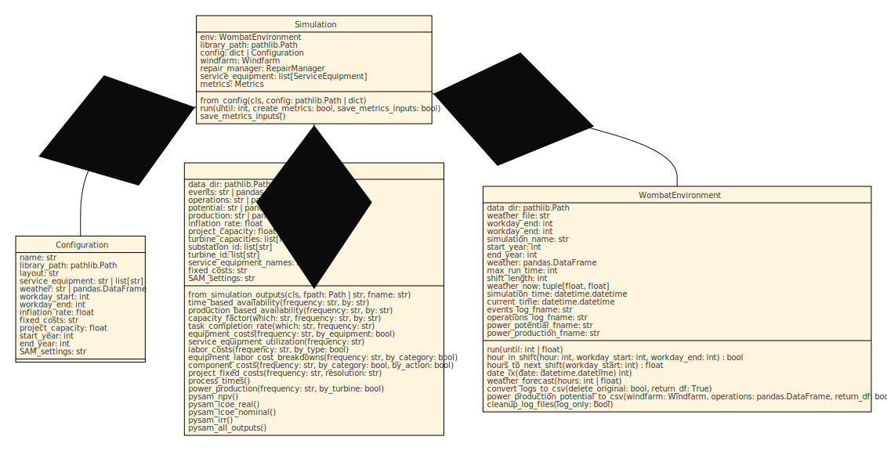

Simulation API#
{kind=link}
Configuration#
- class wombat.core.simulation_api.Configuration(name, layout, service_equipment, weather, workday_start, workday_end, inflation_rate, project_capacity, fixed_costs=None, port=None, start_year=None, end_year=None, port_distance=None, non_operational_start=None, non_operational_end=None, reduced_speed_start=None, reduced_speed_end=None, reduced_speed=0.0, random_seed=None, random_generator=None)[source]#
The
Simulationconfiguration data class that provides all the necessary definitions.- Parameters:
name (str) -- Name of the simulation. Used for logging files.
layout (str) -- The windfarm layout file. See
wombat.Windfarmfor more details.service_equipment (str | list[str]) -- The equpiment that will be used in the simulation. See
wombat.core.ServiceEquipmentfor more details.weather (str) -- The weather profile to be used. See
wombat.simulation.WombatEnvironmentfor more details.workday_start (int) -- Starting hour for a typical work shift. Can be overridden by equipment-specific settings.
workday_end (int) -- Ending hour for a typical work shift. Can be overridden by equipment-specific settings.
inflation_rate (float) -- The annual inflation rate to be used for post-processing.
fixed_costs (str) -- The file name for the fixed costs assumptions.
project_capacity (int | float) -- The total capacity of the wind plant, in MW.
port (dict | str | Path) -- The port configuration file or dictionary that will be used to setup a tow-to-port repair strategy, default None.
port_distance (int | float) -- The simulation-wide daily travel distance for servicing equipment. This should be used as a base setting when multiple or all servicing equipment will be operating out of the same base location, but can be individually modified.
start_year (int) -- Start year of the simulation. The exact date will be determined by the first valid date of this year in
weather.end_year (int) -- Final year of the simulation. The exact date will be determined by the last valid date of this year in
weather.non_operational_start (str | datetime.datetime | None) -- The starting month and day, e.g., MM/DD, M/D, MM-DD, etc. for an annualized period of prohibited operations. When defined at the environment level, an undefined or later starting date will be overridden for all servicing equipment and any modeled port, by default None.
non_operational_end (str | datetime.datetime | None) -- The ending month and day, e.g., MM/DD, M/D, MM-DD, etc. for an annualized period of prohibited operations. When defined at the environment level, an undefined or earlier ending date will be overridden for all servicing equipment and any modeled port, by default None.
reduced_speed_start (str | datetime.datetime | None) -- The starting month and day, e.g., MM/DD, M/D, MM-DD, etc. for an annualized period of reduced speed operations. When defined at the environment level, an undefined or later starting date will be overridden for all servicing equipment and any modeled port, by default None.
reduced_speed_end (str | datetime.datetime | None) -- The ending month and day, e.g., MM/DD, M/D, MM-DD, etc. for an annualized period of reduced speed operations. When defined at the environment level, an undefined or earlier ending date will be overridden for all servicing equipment and any modeled port, by default None.
reduced_speed (float) -- The maximum operating speed during the annualized reduced speed operations. When defined at the environment level, an undefined or faster value will be overridden for all servicing equipment and any modeled port, by default 0.0.
random_seed (int | None) -- The random seed to be passed to a universal NumPy
default_rngobject to generate Weibull random generators, by default None.random_generator (np.random._generator.Generator | None) -- An optional numpy random generator that can be provided to seed a simulation with the same generator each time, in place of the random seed. If a
random_seedis also provided, this will override the random seed, by default None.
Simulation Interface#
- class wombat.core.simulation_api.Simulation(library_path, config, random_seed=None, random_generator=None)[source]#
The primary API to interact with the simulation methodologies.
- Parameters:
library_path (str) -- The path to the main data library.
config (Configuration | dict | str) --
- One of the following:
A pre-loaded
ConfigurationobjectA dictionary ready to be converted to a
ConfigurationobjectThe name of the configuration file to be loaded, that will be located at:
library_path/ config /config
random_seed (int | None) -- The random seed to be passed to a universal NumPy
default_rngobject to generate Weibull random generators, by default None.random_generator (np.random._generator.Generator | None) -- An optional numpy random generator that can be provided to seed a simulation with the same generator each time, in place of the random seed. If a
random_seedis also provided, this will override the random seed, by default None.
- _create_configuration(attribute, value)[source]#
Validates the configuration object and creates the
Configurationobject for the simulation.- Raises:
TypeError -- Raised if the value provided is not able to create a valid
ConfigurationobjectValueError -- Raised if
nameandconfig.nameorlibrary_pathandconfig.libraryare not aligned.
- Return type:
None- Returns:
Configuration -- The validated simulation configuration
- Parameters:
attribute (Attribute)
value (str | Path | dict | Configuration)
- classmethod from_config(library_path, config)[source]#
Creates the
Simulationobject only the configuration contents as either a full file path to the configuration file, a dictionary of the configuration contents, or pre-loadedConfigurationobject.- Parameters:
library_path (str | Path) -- The simulation's data library. If a filename is provided for
config, this is the data library from where it will be imported. This will also be used to feed into the returned Simulation.library_path.config (str | Path | dict | Configuration) --
The simulation configuration, see
Configurationfor more details on the contents. The following is a description of the acceptable contents:str: the full file path of the configuration yaml file.dict: a dictionary with the requried configuration settings.Configuration: a pre-createdConfigurationobject.
- Raises:
TypeError -- Raised if
configis not one of the three acceptable input types.- Returns:
Simulation -- A ready-to-run
Simulationobject.
- run(until=None, create_metrics=True, save_metrics_inputs=True)[source]#
Calls
WombatEnvironment.run()and gathers the results for post-processing. Seewombat.simulation.WombatEnvironment.runorsimpy.Environment.runfor more details.- Parameters:
until (Optional[int | float | Event], optional) -- When to stop the simulation, by default None. See documentation on
simpy.Environment.runfor more details.create_metrics (bool, optional) -- If True, the metrics object will be created, and not, if False, by default True.
save_metrics_inputs (bool, optional) -- If True, the metrics inputs data will be saved to a yaml file, with file references to any larger data structures that can be reloaded later. If False, the data will not be saved, by default True.
Metrics Computation#
For example usage of the Metrics class and its associated methods, please see the examples documentation page
- class wombat.core.post_processor.Metrics(data_dir, events, operations, potential, production, inflation_rate, project_capacity, turbine_capacities, substation_id, turbine_id, substation_turbine_map, service_equipment_names, fixed_costs=None)[source]#
The metric computation class for storing logs and compiling results.
- Parameters:
data_dir (str | Path)
events (str | pd.DataFrame)
operations (str | pd.DataFrame)
potential (str | pd.DataFrame)
production (str | pd.DataFrame)
inflation_rate (float)
project_capacity (float)
turbine_capacities (list[float])
substation_id (str | list[str])
turbine_id (str | list[str])
substation_turbine_map (dict[str, dict[str, list[str]]])
service_equipment_names (str | list[str])
fixed_costs (str | None)
- _hourly_cost = 'hourly_labor_cost'#
- _salary_cost = 'salary_labor_cost'#
- _labor_cost = 'total_labor_cost'#
- _equipment_cost = 'equipment_cost'#
- _materials_cost = 'materials_cost'#
- _total_cost = 'total_cost'#
- _cost_columns = ['hourly_labor_cost', 'salary_labor_cost', 'total_labor_cost', 'equipment_cost', 'materials_cost', 'total_cost']#
- classmethod from_simulation_outputs(fpath, fname)[source]#
Creates the Metrics class from the saved outputs of a simulation for ease of revisiting the calculated metrics.
- Parameters:
fpath (Path | str) -- The full path to the file where the data was saved.
fname (Path | str) -- The filename for where the data was saved, which should be a direct dictionary mapping for the Metrics initialization.
- Return type:
- Returns:
Metrics -- The class object.
- _tidy_data(data)[source]#
Tidies the "raw" csv-converted data to be able to be used among the
Metricsclass.- Parameters:
data (pd.DataFrame) -- The csv log data.
- Return type:
DataFrame- Returns:
pd.DataFrame -- A tidied data frame to be used for all the operations in this class.
- _read_data(fname)[source]#
Reads the csv log data from library. This is intended to be used for the events or operations data.
- Parameters:
path (str) -- Path to the simulation library.
fname (str) -- Filename of the csv data.
- Return type:
DataFrame- Returns:
pd.DataFrame -- Dataframe of either the events or operations data.
- _apply_inflation_rate(events)[source]#
Adjusts the cost data for compounding inflation.
- Parameters:
inflation_rate (float) -- The inflation rate to be applied for each year.
events (pd.DataFrame) -- The events dataframe containing the project cost data.
- Return type:
DataFrame- Returns:
pd.DataFrame -- The events dataframe with costs adjusted for inflation.
- time_based_availability(frequency, by)[source]#
Calculates the time-based availabiliy over a project's lifetime as a single value, annual average, or monthly average for the whole windfarm or by turbine.
Note
This currently assumes that if there are multiple substations, that the turbines are all connected to multiple.
- Parameters:
frequency (str) -- One of "project", "annual", "monthly", or "month-year".
by (str) -- One of "windfarm" or "turbine".
- Return type:
DataFrame- Returns:
pd.DataFrame -- The time-based availability at the desired aggregation level.
- production_based_availability(frequency, by)[source]#
Calculates the production-based availabiliy over a project's lifetime as a single value, annual average, or monthly average for the whole windfarm or by turbine.
Note
This currently assumes that if there are multiple substations, that the turbines are all connected to multiple.
- Parameters:
frequency (str) -- One of "project", "annual", "monthly", or "month-year".
by (str) -- One of "windfarm" or "turbine".
- Return type:
DataFrame- Returns:
pd.DataFrame -- The production-based availability at the desired aggregation level.
- capacity_factor(which, frequency, by)[source]#
Calculates the capacity factor over a project's lifetime as a single value, annual average, or monthly average for the whole windfarm or by turbine.
Note
This currently assumes that if there are multiple substations, that the turbines are all connected to multiple.
- Parameters:
which (str) -- One of "net" or "gross".
frequency (str) -- One of "project", "annual", "monthly", or "month-year".
by (str) -- One of "windfarm" or "turbine".
- Return type:
DataFrame- Returns:
pd.DataFrame -- The capacity factor at the desired aggregation level.
- task_completion_rate(which, frequency)[source]#
Calculates the task completion rate (including tasks that are canceled after a replacement event) over a project's lifetime as a single value, annual average, or monthly average for the whole windfarm or by turbine.
- Parameters:
which (str) -- One of "scheduled", "unscheduled", or "both".
frequency (str) -- One of "project", "annual", "monthly", or "month-year".
- Return type:
float|DataFrame- Returns:
float | pd.DataFrame -- The task completion rate at the desired aggregation level.
- equipment_costs(frequency, by_equipment=False)[source]#
Calculates the equipment costs for the simulation at a project, annual, or monthly level with (or without) respect to equipment utilized in the simulation. This excludes any port fees that might apply, which are included in:
port_fees.- Parameters:
frequency (str) -- One of "project", "annual", "monthly", or "month-year".
by_equipment (bool, optional) -- Indicates whether the values are with resepect to the equipment utilized (True) or not (False), by default False.
- Return type:
DataFrame- Returns:
pd.DataFrame --
- Returns pandas
DataFramewith columns: year (if appropriate for frequency)
month (if appropriate for frequency)
then any equipment names as they appear in the logs
- Returns pandas
- Raises:
ValueError -- If
frequencyis not one of "project", "annual", "monthly", or "month-year".ValueError -- If
by_equipmentis not one ofTrueorFalse.
- service_equipment_utilization(frequency)[source]#
Calculates the utilization rate for each of the service equipment in the simulation as the ratio of total number of days each of the servicing equipment is in operation over the total number of days it's present in the simulation. This number excludes mobilization time and the time between visits for scheduled servicing equipment strategies.
Note
For tugboats in a tow-to-port scenario, this ratio will be near 100% because they are considered to be operating on an as-needed basis per the port contracting assumptions
- Parameters:
frequency (str) -- One of "project" or "annual".
- Return type:
DataFrame- Returns:
pd.DataFrame -- The utilization rate of each of the simulation
SerivceEquipment.- Raises:
ValueError -- If
frequencyis not one of "project" or "annual".
- vessel_crew_hours_at_sea(frequency, by_equipment=False, vessel_crew_assumption={})[source]#
Calculates the total number of crew hours at sea that occurred during a simulation at a project, annual, or monthly level that can be broken out by servicing equipment. This includes time mobilizing, delayed at sea, servicing, towing, and traveling.
Note
This metric is intended to be used for offshore wind simulations.
- Parameters:
frequency (str) -- One of "project", "annual", "monthly", or "month-year".
by_equipment (bool, optional) -- Indicates whether the values are with resepect to each tugboat (True) or not (False), by default False.
vessel_crew_assumption (dict[str, float], optional) -- Dictionary of vessel names (
ServiceEquipment.settings.name) and number of crew members aboard to trannsform the results from vessel hours at sea to crew hours at sea.
- Return type:
DataFrame- Returns:
pd.DataFrame -- Returns a pandas
DataFramewith columns:year (if appropriate for frequency)
month (if appropriate for frequency)
Total Crew Hours at Sea
{ServiceEquipment.settings.name} (if broken out)
- Raises:
ValueError -- If
frequencyis not one of "project", "annual", "monthly", or "month-year".ValueError -- If
by_equipmentis not one ofTrueorFalse.ValueError -- If
vessel_crew_assumptionis not a dictionary.
- number_of_tows(frequency, by_tug=False, by_direction=False)[source]#
Calculates the total number of tows that occurred during a simulation at a project, annual, or monthly level that can be broken out by tugboat.
- Parameters:
frequency (str) -- One of "project", "annual", "monthly", or "month-year".
by_tug (bool, optional) -- Indicates whether the values are with resepect to each tugboat (True) or not (False), by default False.
by_direction (bool, optional) -- Indicates whether the values are with respect to the direction a turbine is towed (True) or not (False), by default False.
- Return type:
float|DataFrame- Returns:
float | pd.DataFrame -- Returns either a float for whole project-level costs or a pandas
DataFramewith columns:year (if appropriate for frequency)
month (if appropriate for frequency)
total_tows
total_tows_to_port (if broken out)
total_tows_to_site (if broken out)
{ServiceEquipment.settings.name}_total_tows (if broken out)
{ServiceEquipment.settings.name}_to_port (if broken out)
{ServiceEquipment.settings.name}_to_site (if broken out)
- Raises:
ValueError -- If
frequencyis not one of "project", "annual", "monthly", or "month-year".ValueError -- If
by_tugis not one ofTrueorFalse.ValueError -- If
by_directionis not one ofTrueorFalse.
- labor_costs(frequency, by_type=False)[source]#
Calculates the labor costs for the simulation at a project, annual, or monthly level that can be broken out by hourly and salary labor costs.
- Parameters:
frequency (str) -- One of "project", "annual", "monthly", or "month-year".
by_type (bool, optional) -- Indicates whether the values are with resepect to the labor types (True) or not (False), by default False.
- Return type:
float|DataFrame- Returns:
float | pd.DataFrame -- Returns either a float for whole project-level costs or a pandas
DataFramewith columns:year (if appropriate for frequency)
month (if appropriate for frequency)
total_labor_cost
hourly_labor_cost (if broken out)
salary_labor_cost (if broken out)
- Raises:
ValueError -- If
frequencyis not one of "project", "annual", "monthly", or "month-year".ValueError -- If
by_typeis not one ofTrueorFalse.
- equipment_labor_cost_breakdowns(frequency, by_category=False, by_equipment=False)[source]#
Calculates the producitivty cost and time breakdowns for the simulation at a project, annual, or monthly level that can be broken out to include the equipment and labor components, as well as be broken down by servicing equipment.
Note
Doesn't produce a value if there's no cost associated with a "reason".
- Parameters:
frequency (str) -- One of "project", "annual", "monthly", or "month-year".
by_category (bool, optional) -- Indicates whether to include the equipment and labor categories (True) or not (False), by default False.
by_equipment (bool, optional) -- Indicates whether the values are with resepect to the equipment utilized (True) or not (False), by default False.
- Return type:
DataFrame- Returns:
pd.DataFrame --
- Returns pandas
DataFramewith columns: year (if appropriate for frequency)
month (if appropriate for frequency)
reason
hourly_labor_cost (if by_category ==
True)salary_labor_cost (if by_category ==
True)total_labor_cost (if by_category ==
True)equipment_cost (if by_category ==
True)total_cost (if broken out)
total_hours
- Returns pandas
- Raises:
ValueError -- If
frequencyis not one of "project", "annual", "monthly", or "month-year".ValueError -- If
by_categoryis not one ofTrueorFalse.
- emissions(emissions_factors, maneuvering_factor=0.1, port_engine_on_factor=0.25)[source]#
Calculates the emissions, typically in tons, per hour of operations for transiting, maneuvering (calculated as a % of transiting), idling at the site (repairs, crew transfer, weather delays), and idling at port (weather delays), excluding waiting overnight between shifts.
- Parameters:
emissions_factors (dict) -- Dictionary of emissions per hour for "transit", "maneuver", "idle at site", and "idle at port" for each of the servicing equipment in the simulation.
maneuvering_factor (float, optional) -- The proportion of transit time that can be attributed to maneuvering/positioning, by default 0.1.
port_engine_on_factor (float, optional) -- The proportion of idling at port time that can be attributed to having the engine on and producing emissions, by default 0.25.
- Return type:
DataFrame- Returns:
pd.DataFrame -- DataFrame of "duration" (hours), "distance_km", and "emissions" (tons) for each servicing equipment in the simulation for each emissions category.
- Raises:
KeyError -- Raised if any of the servicing equipment are missing from the
emissions_factorsdictionary.KeyError -- Raised if any of the emissions categories are missing from each servcing equipment definition in
emissions_factors.
- component_costs(frequency, by_category=False, by_action=False)[source]#
Calculates the component costs for the simulation at a project, annual, or monthly level that can be broken out by cost categories. This will not sum to the total cost because it is does not include times where there is no work being done, but costs are being accrued.
Note
It should be noted that the costs will include costs accrued from both weather delays and shift-to-shift delays. In the future these will be disentangled.
- Parameters:
frequency (str) -- One of "project", "annual", "monthly", or "month-year".
by_category (bool, optional) -- Indicates whether the values are with resepect to the various cost categories (True) or not (False), by default False.
by_action (bool, optional) -- Indicates whether component costs are going to be further broken out by the action being performed--repair, maintenance, and delay--(True) or not (False), by default False.
- Return type:
DataFrame- Returns:
float | pd.DataFrame -- Returns either a float for whole project-level costs or a pandas
DataFramewith columns:year (if appropriate for frequency)
month (if appropriate for frequency)
component
action (if broken out)
materials_cost (if broken out)
total_labor_cost (if broken out)
equipment_cost (if broken out)
total_cost
- Raises:
ValueError -- If
frequencyis not one of "project", "annual", "monthly", or "month-year".ValueError -- If
by_categoryis not one ofTrueorFalse.ValueError -- If
by_actionis not one ofTrueorFalse.
- port_fees(frequency)[source]#
Calculates the port fees for the simulation at a project, annual, or monthly level. This excludes any equipment or labor costs, which are included in:
equipment_costs.- Parameters:
frequency (str) -- One of "project" or "annual", "monthly", ".
- Return type:
DataFrame- Returns:
pd.DataFrame -- The broken out by time port fees with
- Raises:
ValueError -- If
frequencynot one of "project" or "annual".
- project_fixed_costs(frequency, resolution)[source]#
Calculates the fixed costs of a project at the project and annual frequencies at a given cost breakdown resolution.
- Parameters:
frequency (str) -- One of "project" or "annual", "monthly", ".
resolution (st) --
One of "low", "medium", or "high", where the values correspond to:
low:
FixedCosts.resolution["low"], corresponding to itemized costs.medium:
FixedCosts.resolution["medium"], corresponding to the overarching cost categories.high:
FixedCosts.resolution["high"], corresponding to a lump sum.
These values can also be seen through the
FixedCosts.hierarchy
- Return type:
DataFrame- Returns:
pd.DataFrame -- The project's fixed costs as a sum or annualized with high, medium, and low resolution as desired.
- Raises:
ValueError -- If
frequencynot one of "project" or "annual".ValueError -- If
resolutionmust be one of "low", "medium", or "high".
- opex(frequency, by_category=False)[source]#
Calculates the project's OpEx for the simulation at a project, annual, or monthly level.
- Parameters:
frequency (str) -- One of project, annual, monthly, or month-year.
by_category (bool, optional) -- Indicates whether the values are with resepect to the various cost categories (True) or not (False), by default False.
- Return type:
DataFrame- Returns:
pd.DataFrame -- The project's OpEx broken out at the desired time and category resolution.
- process_times()[source]#
Calculates the time, in hours, to complete a repair/maintenance request, on both a request to completion basis, and the actual time to complete the repair.
- Return type:
DataFrame- Returns:
pd.DataFrame --
category (index): repair/maintenance category
time_to_completion: total number of hours from the time of request to the time of completion
process_time: total number of hours it took for the equipment to complete
the request.
downtime: total number of hours where the operations were below 100%.
N: total number of processes in the category.
- power_production(frequency, by='windfarm', units='gwh')[source]#
Calculates the power production for the simulation at a project, annual, or monthly level that can be broken out by turbine.
- Parameters:
frequency (str) -- One of "project", "annual", "monthly", or "month-year".
by (str) -- One of "windfarm" or "turbine".
units (str) -- One of "gwh", "mwh", or "kwh".
- Return type:
float|DataFrame- Returns:
float | pd.DataFrame -- Returns either a float for whole project-level costs or a pandas
DataFramewith columns:year (if appropriate for frequency)
month (if appropriate for frequency)
total_power_production
<turbine_id>_power_production (if broken out)
- Raises:
ValueError -- If
frequencyis not one of "project", "annual", "monthly", or "month-year".ValueError -- If
by_turbineis not one ofTrueorFalse.
- npv(frequency, discount_rate=0.025, offtake_price=80)[source]#
Calculates the net present value of the windfarm at a project, annual, or monthly resolution given a base discount rate and offtake price.
Note
This function will be improved over time to incorporate more of the financial parameter at play, such as PPAs.
- Parameters:
frequency (str) -- One of "project", "annual", "monthly", or "month-year".
discount_rate (float, optional) -- The rate of return that could be earned on alternative investments, by default 0.025.
offtake_price (float, optional) -- Price of energy, per MWh, by default 80.
- Return type:
DataFrame- Returns:
pd.DataFrame -- The project net prsent value at the desired time resolution.